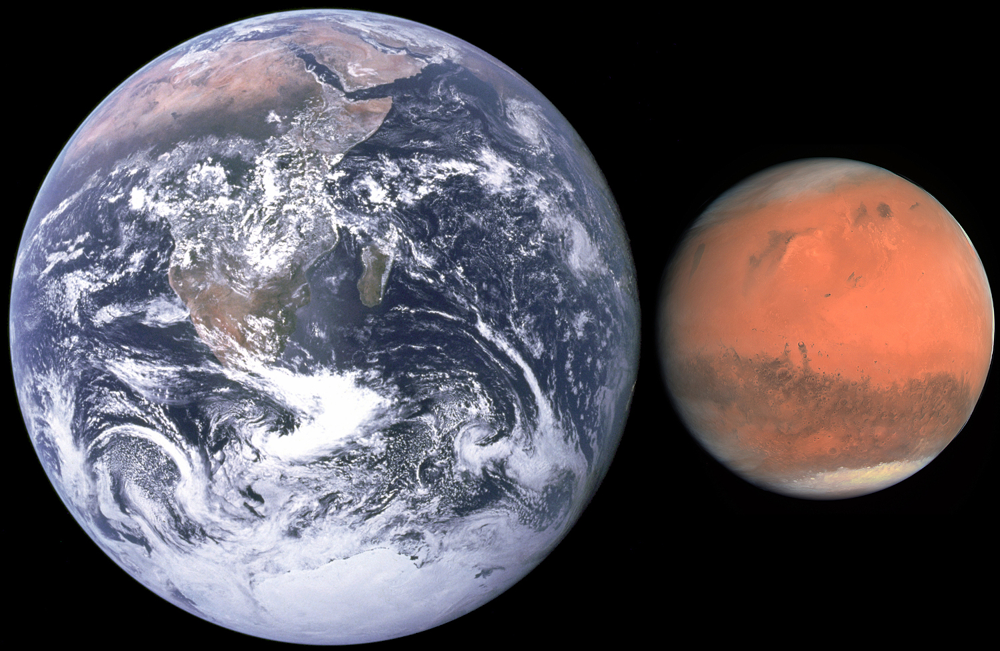

The hypothetical colonization of Mars (or settlement of Mars) COM or SOM has received interest from public space agencies and private corporations, and has received extensive treatment in science fiction writing, film, and art. Organizations have proposed plans for a human mission to Mars, the first step towards any colonization effort, but no person has set foot on the planet. However, landers and rovers have successfully explored the planetary surface and delivered information about conditions on the ground. Reasons for colonizing Mars include curiosity, the potential for humans to provide more in-depth observational research than unmanned rovers, economic interest in its resources, and the possibility that the settlement of other planets could decrease the likelihood of human extinction. Difficulties and hazards include radiation exposure during a trip to Mars and on its surface, toxic soil, low gravity, the isolation that accompanies Mars' distance from Earth, a lack of water, and cold temperatures. The most recent commitments to researching permanent settlement include those by public space agencies—NASA, ESA, Roscosmos, ISRO, the CNSA and the United Arab Emirates—and private organizations— SpaceX, Lockheed Martin, and Boeing.
|  |
Well, the surface is not hospitable to humans or most known life forms due to the radiation, greatly reduced air pressure, and an atmosphere with only 0.16% oxygen. ... Human survival on Mars would require living in artificial Mars habitats with complex life-support systems.
|
|
A Mars habitat is a place that humans can live in on Mars. Mars habitats must contend with surface conditions that include almost no oxygen in the air, extreme cold, low pressure, and high radiation. Alternatively, the habitat may be placed underground, which helps solve some problems but creates new difficulties. One challenge is the extreme cost of building materials for Mars, which by the 2010s was estimated be about US$2 million per brick to the surface of Mars. While the gravity on Mars is lower than that on Earth, there is increased solar radiation, temperature cycles, and the high internal forces needed for pressurized habitats to contain air. To contend with these constraints, architects have worked to understand the right balance between in-situ materials and construction, and ex-situ to Mars. For example, one idea is to use the locally available regolith to shield against radiation exposure, and another idea is to use transparent ice to allow non-harmful light to enter the habitat. Mars habitat design can also involve the study of local conditions, including pressures, temperatures, and local materials, especially water.
"Have nothing in your house that you do not know to be useful, or believe to be beautiful".
-William Morris
To sum up, building a mars habitat has these difficulties:
Design your very own Mars habitat:
If u have participated in any of Amazing Stargazing activites recently, please take this survey to give them some feedback.
And maybe you are interested in participating in this totally free 3-day stargazing course. Check it out!!!!